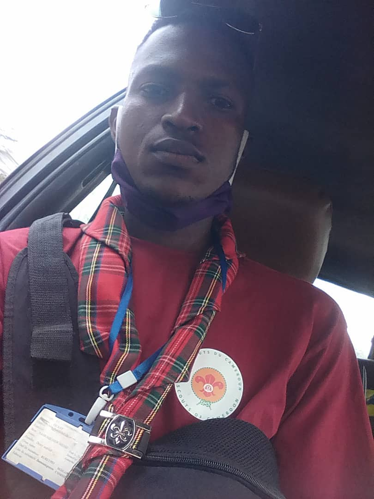
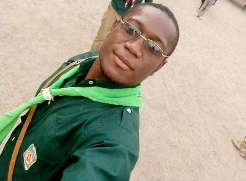

Says "Tender cheetah" Environnemental Engineer and full stack Web Developer, he is specializes in recycling tires and making decorative objects with platic bottles of all kinds

NAOUSSI CEDRIC
Called unifying hawk, it specialiwe in plastic tire recycling and humans resources management. Cappenter by training, he has a mastery of ecological transformations
LANDAMSO Michael
he is specialise in plastic tire recycling and transformations pedrochimical, he has a mastery of ecological transformations of chimical products

SATEU Douglass
Deputate junior, he has made all the training about recycling of plaactics